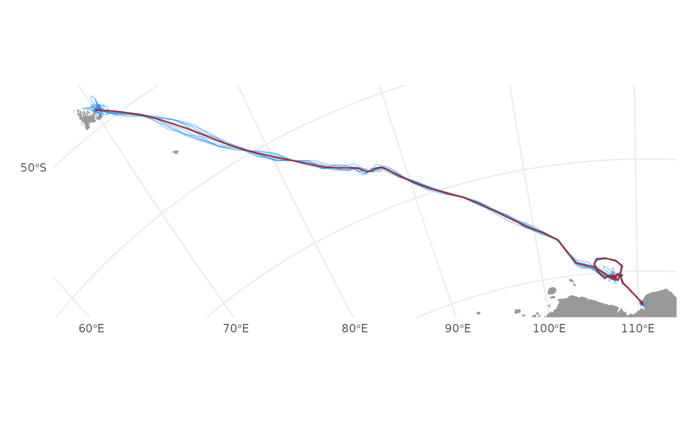

simulates track locations from the joint precision matrix of a
ssm model fit. Currently, the joint precision of the SSM movement
parameters is not included (ie. a full posterior simulation).
sim_post(x, what = "predicted", reps = 1, sim_only = FALSE)a fG_sim_post object containing the paths simulated from a
ssm fit object
fit <- fit_ssm(ellie, model = "crw", time.step = 24)
#> fitting crw SSM to 1 tracks...
#>
pars: 1 1 0 -2.91153
pars: 0.38512 0.37191 -0.01692 -3.38813
pars: -1.4595 -1.51236 -0.06769 -4.81792
pars: -2.20058 -2.24383 -0.11527 -4.95732
pars: -0.38346 -0.4056 -0.04615 -3.85456
pars: -1.23664 -1.20844 -0.10327 -3.65984
pars: -2.25711 -2.16871 -0.17159 -3.42693
pars: -3.07868 -3.34599 -0.26131 -1.24778
pars: -4.46619 -1.62751 -0.49092 0.12579
pars: -3.18442 -2.86245 -0.30197 -0.80151
pars: -3.40955 -3.30581 -0.49919 -0.40195
pars: -3.06893 -3.16418 -1.05454 -0.36585
pars: -3.5513 -2.81435 -1.34642 -0.44033
pars: -3.30092 -3.01944 -1.10395 -0.39263
pars: -3.27833 -3.03821 -1.38152 -0.39631
pars: -3.23173 -2.97174 -2.21731 -0.40477
pars: -3.28771 -3.08271 -5.28966 -0.34232
pars: -3.30222 -3.07091 -5.31779 -0.38305
pars: -3.30222 -3.07091 -5.31779 -0.38305
psim <- sim_post(fit, "p", reps = 10)
plot(psim, type = "lines")
